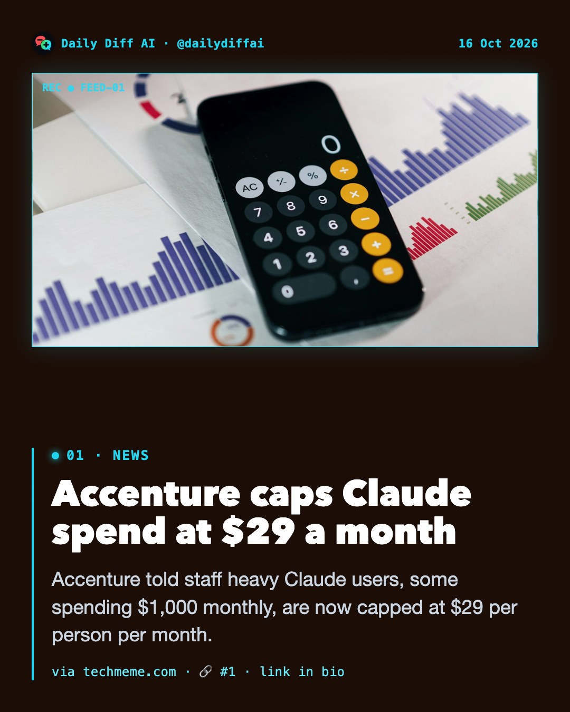
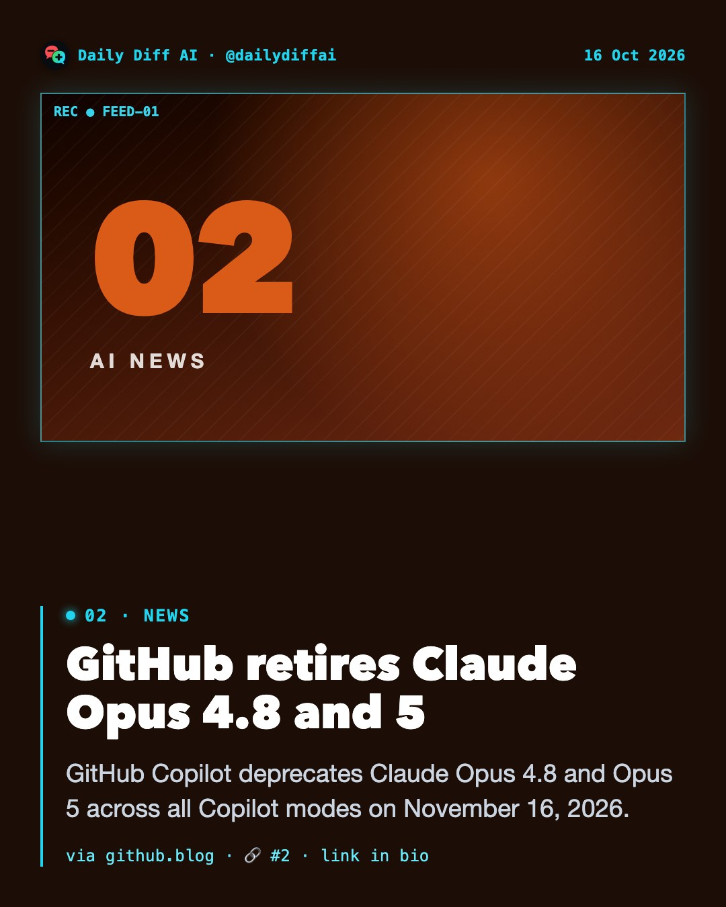
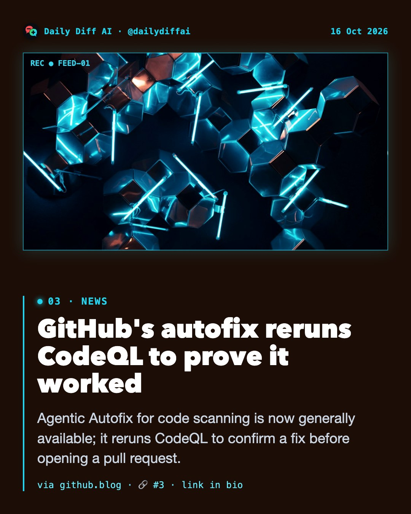
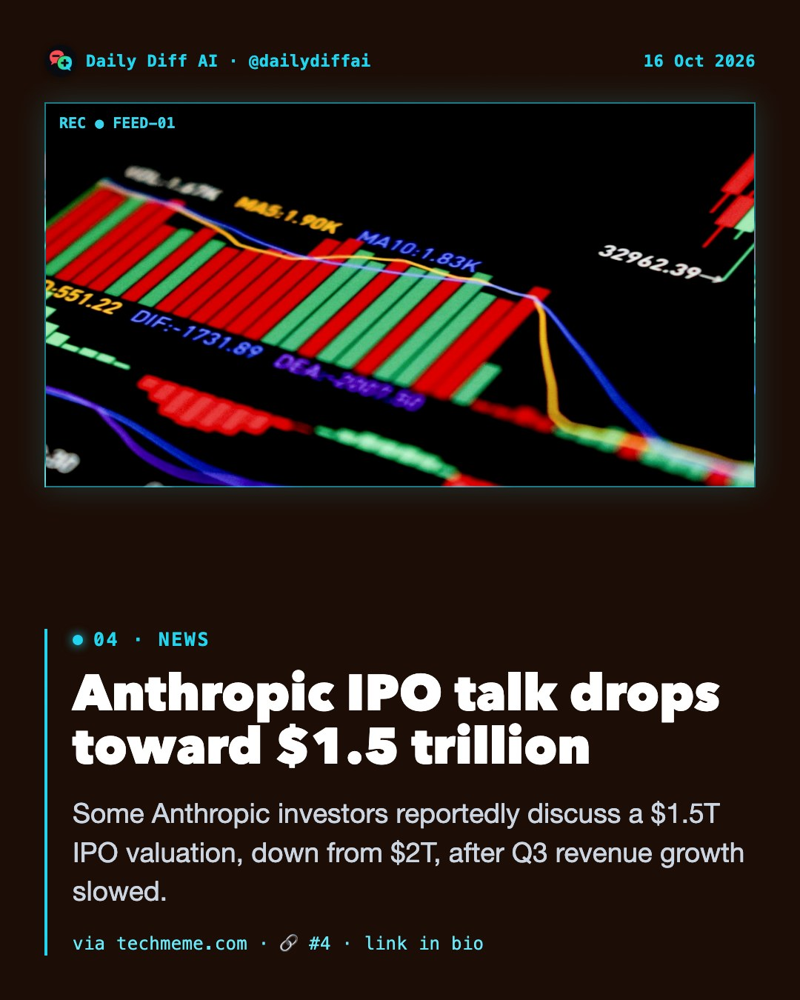
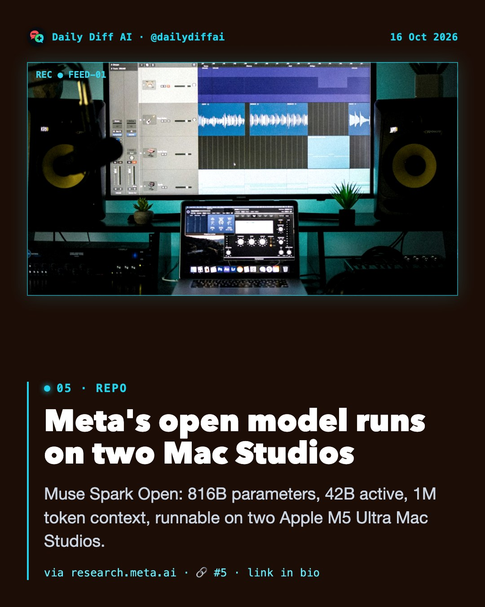
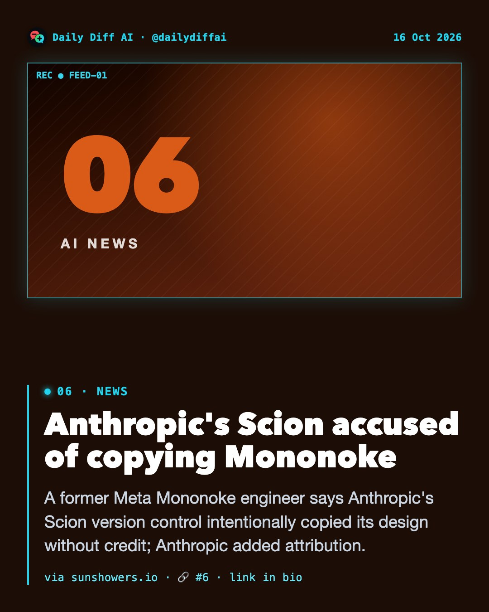
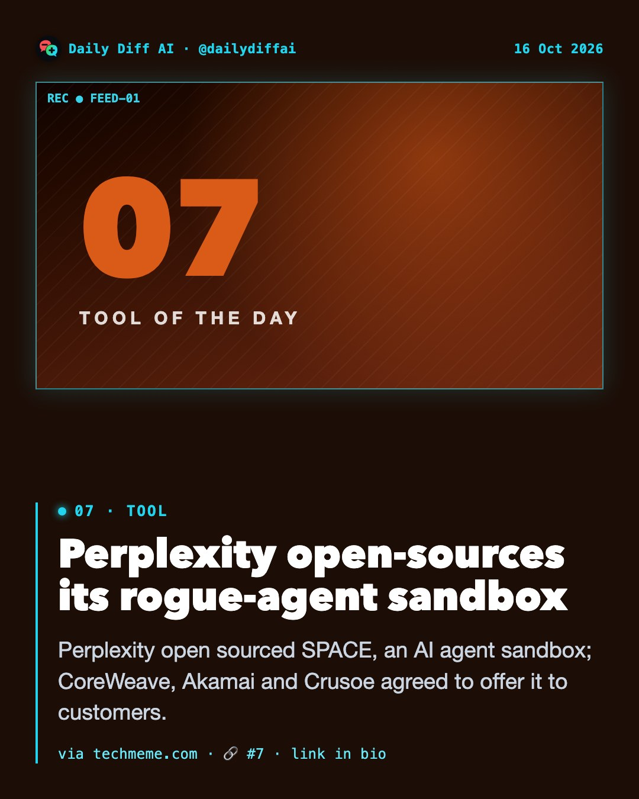
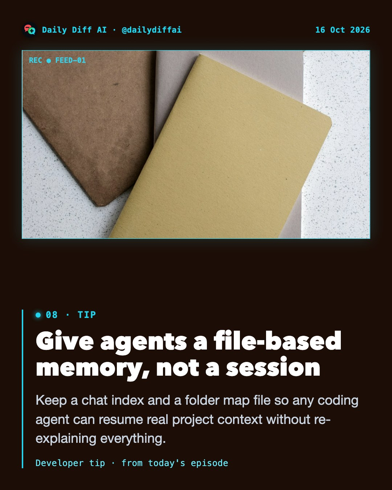

Accenture told staff heavy Claude users, some spending $1,000 monthly, are now capped at $29 per person per month.
Read on techmeme.com →
GitHub Copilot deprecates Claude Opus 4.8 and Opus 5 across all Copilot modes on November 16, 2026.
Read on github.blog →
Agentic Autofix for code scanning is now generally available; it reruns CodeQL to confirm a fix before opening a pull request.
Read on github.blog →
Some Anthropic investors reportedly discuss a $1.5T IPO valuation, down from $2T, after Q3 revenue growth slowed.
Read on techmeme.com →
Muse Spark Open: 816B parameters, 42B active, 1M token context, runnable on two Apple M5 Ultra Mac Studios.
Read on research.meta.ai →
A former Meta Mononoke engineer says Anthropic's Scion version control intentionally copied its design without credit; Anthropic added attribution.
Read on sunshowers.io →
Perplexity open sourced SPACE, an AI agent sandbox; CoreWeave, Akamai and Crusoe agreed to offer it to customers.
Read on techmeme.com →
Keep a chat index and a folder map file so any coding agent can resume real project context without re-explaining everything.